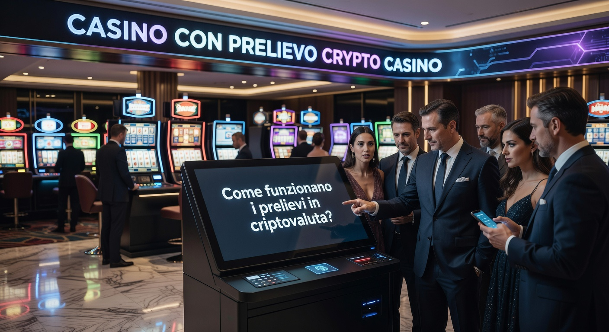
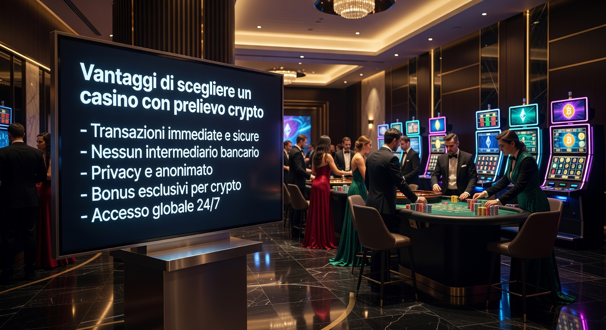
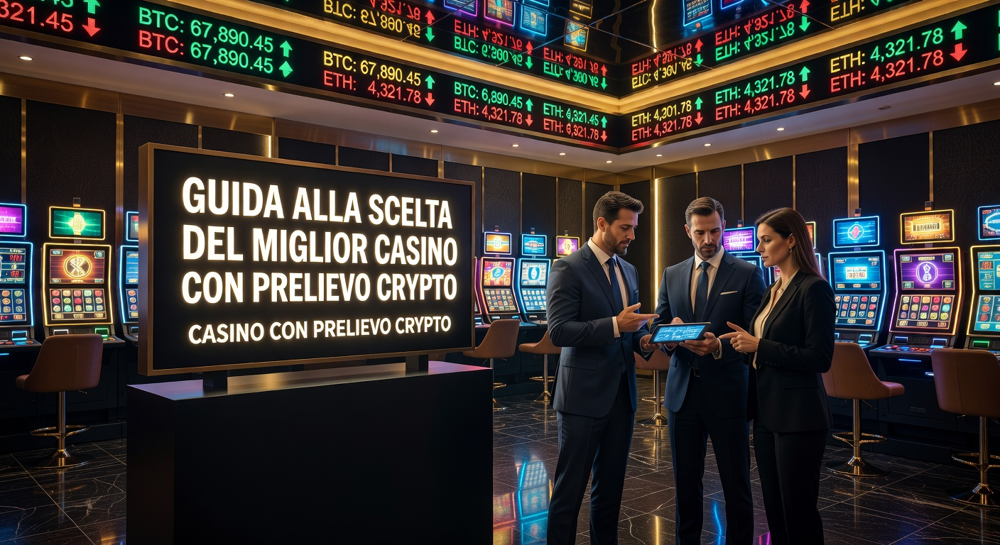
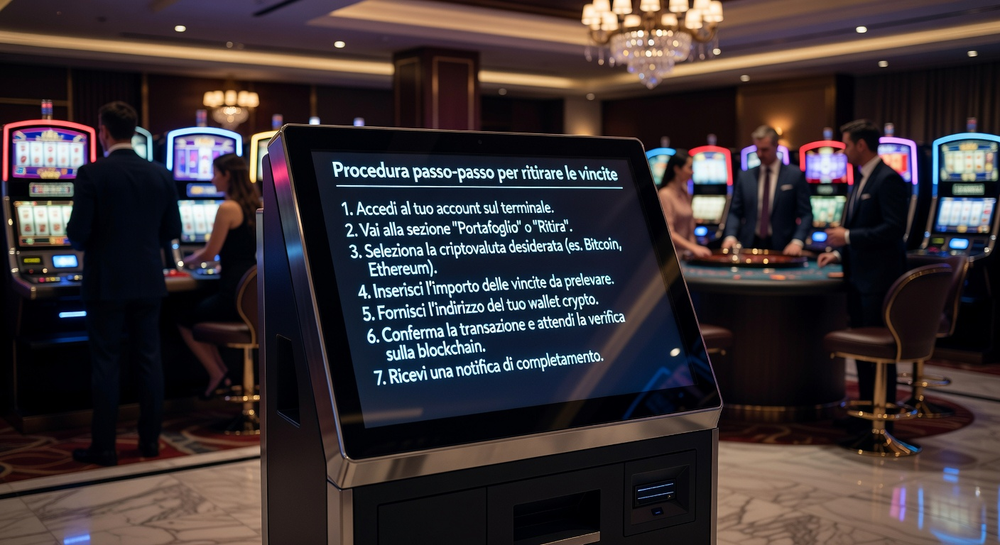
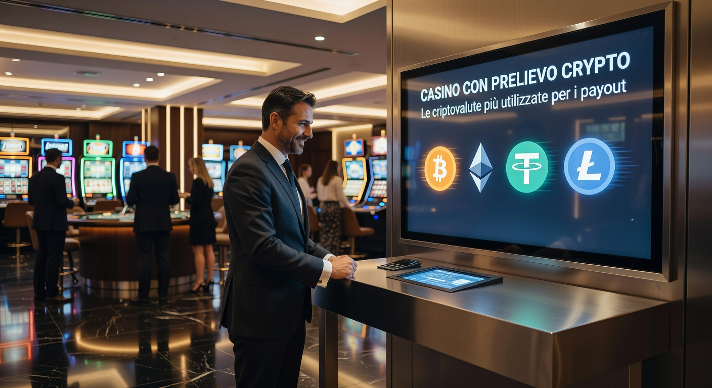

Casino con prelievo crypto casino: I migliori siti per pagamenti istantanei 2026
Nel panorama del gioco d'azzardo digitale del 2026, la velocità e la sicurezza sono diventate le priorità assolute per ogni appassionato. La ricerca di un casino con prelievo crypto casino affidabile non è più solo una questione di tendenza, ma una necessità per chi desidera gestire il proprio bankroll con la massima efficienza. Grazie all'evoluzione delle tecnologie blockchain, i tempi di attesa biblici dei bonifici bancari sono ormai un ricordo del passato, lasciando spazio a transazioni che avvengono in pochi secondi.
Millioner Casino
★★★★★ 5.0Bonus di benvenuto fino a €500
Roulettino Casino
★★★★★ 4.8Bonus 100% sul primo deposito
Wyns Casino
★★★★★ 4.7Bonus esclusivo fino a €1000
Kinbet Casino
★★★★★ 4.5200% bonus + 50 giri gratis
Dragonia Casino
★★★★★ 4.4Bonus benvenuto 150% fino a €300
Le piattaforme che analizziamo oggi rappresentano l'apice dell'innovazione nel settore IT applicato al gaming. Un moderno casino con prelievo crypto casino non si limita a offrire Bitcoin, ma integra protocolli Layer 2 e stablecoin per garantire che ogni utente possa incassare i propri fondi senza intoppi. In questa guida completa, esploreremo come identificare i siti più sicuri e quali sono i vantaggi tecnici di utilizzare monete digitali per le vostre sessioni di gioco nel 2026.
La maturità del mercato ha portato alla nascita di ecosistemi complessi dove la trasparenza è garantita dagli smart contract. Scegliere un casino con prelievo crypto casino significa affidarsi a sistemi che riducono al minimo l'errore umano e le lungaggini burocratiche. Vedremo nel dettaglio perché la licenza internazionale, unita a un solido reparto tecnico, faccia la differenza tra un'esperienza frustrante e una di successo in questo ambito digitale in continua evoluzione.
Classifica dei migliori casino crypto con prelievo veloce
Per aiutarvi a navigare nel vasto oceano di opzioni disponibili nel 2026, abbiamo selezionato le piattaforme che si distinguono per l'eccellenza operativa. Ogni casino con prelievo crypto casino menzionato in questa lista è stato testato rigorosamente dal nostro team di esperti IT per verificare la velocità reale delle transazioni e la solidità dei loro sistemi di sicurezza informatica.
| Brand | Velocità Prelievo | Crypto Supportate | Bonus Benvenuto | Link Ufficiale |
|---|---|---|---|---|
| Millioner | Istantaneo | BTC, ETH, USDT, SOL | 100% fino a 2 ETH | Visita Millioner |
| Roulettino | < 5 minuti | BTC, LTC, XRP, DOGE | 500 Free Spins | Visita Roulettino |
| Wyns | Istantaneo | Multi-chain (Polygon, BSC) | Cashback 20% | Visita Wyns |
| Kinbet | < 10 minuti | Bitcoin, Ethereum, USDC | Bonus 150% | Visita Kinbet |
| Dragonia | Istantaneo | BTC, TRX, ADA | Programma VIP Esclusivo | Visita Dragonia |
| Divaspin | < 15 minuti | Tether, Bitcoin Cash | Bonus High Roller | Visita Divaspin |
Questi siti rappresentano l'eccellenza nel 2026 per chiunque cerchi un casino con prelievo crypto casino che non faccia domande inutili e processi le richieste in modo automatizzato. La qualità del servizio è supportata da infrastrutture server all'avanguardia che garantiscono un tempo di attività del 99,9%, essenziale per chi gioca con asset digitali volatili.
Betpanda: Eccellenza nei pagamenti rapidi
Betpanda si è confermato nel corso del 2026 come uno dei punti di riferimento per chi cerca un casino con prelievo crypto casino senza KYC invasivi. La loro architettura backend è ottimizzata per interfacciarsi direttamente con i nodi della blockchain, riducendo le latenze di conferma. Questo permette agli utenti di ricevere i propri fondi quasi nello stesso istante in cui cliccano sul pulsante di incasso, un vantaggio competitivo enorme rispetto ai competitor meno tecnologici.
Lucky Block: Il leader dei crypto game
Lucky Block non è solo un semplice sito di scommesse, ma un ecosistema completo basato su token nativi e integrazione Web3. Come casino con prelievo crypto casino, offre una flessibilità senza pari, supportando decine di altcoin diverse. La loro interfaccia utente, aggiornata alle ultime tendenze del 2026, rende il processo di prelievo intuitivo anche per chi si è appena affacciato al mondo delle finanze decentralizzate.
BC.Game: Ampia scelta di altcoin per l'incasso
Se cercate un casino con prelievo crypto casino che supporti le monete più oscure ma promettenti, BC.Game è la scelta ideale. La loro tesoreria gestisce oltre 100 diverse criptovalute, garantendo liquidità immediata per ogni tipo di prelievo. La trasparenza è il loro forte: ogni transazione può essere verificata pubblicamente sull'explorer della blockchain, eliminando ogni dubbio sulla correttezza delle operazioni del sito.
TG.Casino: Giocare e prelevare via Telegram
L'integrazione con Telegram ha rivoluzionato il modo in cui interagiamo con il casino con prelievo crypto casino. TG.Casino sfrutta i bot per automatizzare i depositi e i prelievi direttamente dall'app di messaggistica. Nel 2026, questa modalità è diventata estremamente popolare grazie alla sicurezza end-to-end e alla comodità di gestire il proprio portafoglio crypto e le sessioni di gioco in un unico ambiente protetto.
Come funzionano i prelievi in criptovaluta?

Il funzionamento tecnico dietro un casino con prelievo crypto casino è affascinante e complesso. Quando un giocatore richiede un incasso, il sistema del sito deve verificare che i requisiti di scommessa siano stati soddisfatti. Una volta approvato, il comando viene inviato a un "hot wallet" o a un gateway di pagamento specializzato che firma la transazione digitalmente. Questo processo, nel 2026, è quasi interamente automatizzato per garantire che il casino con prelievo crypto casino mantenga la sua promessa di velocità.
In questo contesto, è importante comprendere che molti siti offrono diversi casino curacao online con licenze che permettono l'uso flessibile di questi asset. La transazione viene poi trasmessa alla rete blockchain (Bitcoin, Ethereum, Solana, etc.), dove i minatori o i validatori la includono in un blocco. La velocità di questo passaggio dipende dalla congestione della rete e dalla commissione impostata dal casino con prelievo crypto casino, ma generalmente avviene entro pochi minuti.
Un aspetto fondamentale del casino con prelievo crypto casino moderno è l'uso di indirizzi di destinazione univoci. Gli utenti devono assicurarsi di copiare correttamente l'indirizzo del proprio wallet personale per evitare la perdita irrimediabile dei fondi. Molti siti nel 2026 hanno introdotto sistemi di verifica tramite QR code e controlli di checksum per minimizzare gli errori umani durante le fasi critiche del ritiro delle somme vinte.
Blockchain e conferma delle transazioni
Ogni operazione effettuata su un casino con prelievo crypto casino deve essere confermata dai nodi della rete. Una "conferma" significa che il blocco contenente la tua transazione è stato aggiunto correttamente alla catena. Nel 2026, reti come Solana o i Layer 2 di Ethereum offrono conferme quasi istantanee. Al contrario, la rete Bitcoin può richiedere ancora circa 10 minuti per il primo blocco, motivo per cui molti casino con prelievo crypto casino preferiscono consigliare l'uso di stablecoin per chi ha estrema urgenza.
Commissioni di rete (Gas Fees) vs Commissioni del sito
Un vantaggio tecnico di un buon casino con prelievo crypto casino è la trasparenza sui costi. Le commissioni di rete, spesso chiamate "gas fees" su Ethereum, sono pagate ai validatori della blockchain. Il casino stesso può decidere di assorbire questi costi come incentivo per i giocatori fedeli o di addebitare una piccola percentuale fissa. Nel 2026, la competizione tra le piattaforme ha portato la maggior parte dei casino con prelievo crypto casino a offrire prelievi gratuiti, coprendo internamente le spese di transazione.
Vantaggi di scegliere un casino con prelievo crypto

Scegliere un casino con prelievo crypto casino offre benefici che vanno ben oltre la semplice rapidità. In un mondo digitale sempre più sorvegliato, la gestione autonoma delle proprie finanze è un valore aggiunto inestimabile. La tecnologia blockchain permette un controllo granulare che i sistemi bancari tradizionali non possono replicare, rendendo ogni casino con prelievo crypto casino un'isola di efficienza tecnologica nel 2026.
Un altro punto di forza risiede nei limiti di transazione. Mentre le banche spesso pongono tetti giornalieri o settimanali ai trasferimenti verso siti di gioco, un casino con prelievo crypto casino permette spesso di spostare somme ingenti senza dover fornire spiegazioni a intermediari finanziari. Questo è particolarmente apprezzato dagli high roller che frequentano i casinò non aams deposito 10 euro, dove la libertà di movimento del capitale è fondamentale.
Inoltre, l'accessibilità globale è un fattore determinante. Un casino con prelievo crypto casino non conosce confini geografici o festività bancarie. Che sia domenica notte o un giorno festivo, la blockchain continua a operare, garantendo che le vostre vincite siano disponibili nel momento esatto in cui decidete di prelevarle. Questo livello di servizio ha ridefinito le aspettative degli utenti IT nel 2026, portando il settore verso nuovi standard di affidabilità.
Velocità superiore rispetto ai bonifici
Il confronto tra un casino con prelievo crypto casino e un sito tradizionale è impietoso sotto il profilo del tempo. Un bonifico SEPA nel 2026 richiede ancora 1-2 giorni lavorativi, mentre una transazione in USDT su rete TRON o Polygon avviene in meno di 60 secondi. Questa immediatezza permette ai giocatori di reinvestire le vincite o di spostarle sul proprio conto bancario fiat tramite exchange in tempi record, eliminando l'ansia dell'attesa che caratterizzava il gioco online degli anni passati.
Privacy e gestione dei dati personali
La privacy è il pilastro su cui si fonda ogni casino con prelievo crypto casino di successo. Sebbene le normative antiriciclaggio esistano, l'uso delle criptovalute riduce la quantità di dati sensibili che viaggiano tra banche e operatori di gioco. Utilizzando un casino con prelievo crypto casino, l'estratto conto bancario dell'utente non mostrerà transazioni dirette verso siti di scommesse, proteggendo la reputazione creditizia e la riservatezza delle proprie abitudini di intrattenimento digitale nel 2026.
Guida alla scelta del miglior casino con prelievo crypto

Non tutti i siti che si dichiarano "crypto-friendly" sono uguali. Per trovare il miglior casino con prelievo crypto casino, è necessario analizzare diversi parametri tecnici e legali. Nel 2026, la sicurezza informatica deve essere il primo criterio di valutazione: cercate piattaforme che utilizzino la crittografia SSL a 256 bit e offrano l'autenticazione a due fattori (2FA) obbligatoria per tutte le operazioni di incasso dei fondi.
Un elemento spesso trascurato è la profondità della liquidità del casino con prelievo crypto casino. Un sito serio deve essere in grado di pagare vincite milionarie senza battere ciglio. Leggete attentamente i termini e le condizioni riguardanti i limiti massimi di prelievo giornaliero e mensile. I migliori casino con prelievo crypto casino del 2026 offrono limiti molto elevati, spesso superando i 50.000 euro equivalenti al giorno per i nuovi utenti, con incrementi significativi per i membri del programma fedeltà.
Considerate anche la varietà dei giochi offerti. Un casino con prelievo crypto casino di qualità collabora con provider di software rinomati come Evolution Gaming, Pragmatic Play e NetEnt, ma offre anche titoli "Provably Fair". Questi ultimi permettono di verificare l'equità di ogni singola giocata tramite algoritmi crittografici, una caratteristica che solo un vero casino con prelievo crypto casino può implementare efficacemente per la gioia degli utenti più tecnici ed esperti di IT.
Verifica della licenza (Curacao vs Malta)
Nel 2026, la maggior parte dei casino con prelievo crypto casino opera sotto la giurisdizione di Curacao, poiché offre un quadro normativo più flessibile per l'integrazione delle valute digitali. Tuttavia, la licenza di Malta (MGA) sta iniziando ad aprirsi a queste tecnologie. Verificare la validità della licenza di un casino con prelievo crypto casino è fondamentale per assicurarsi che esista un ente regolatore a cui rivolgersi in caso di controversie, garantendo così un livello di protezione supplementare per i propri fondi.
Selezione di giochi e provider software
La qualità del catalogo di un casino con prelievo crypto casino è un indicatore della sua solidità economica. I provider di alto livello non concedono i propri giochi a piattaforme poco affidabili. Nel 2026, i migliori siti offrono migliaia di slot machine, tavoli di blackjack dal vivo e innovativi giochi basati su blockchain (come i "Crash games") che sono ottimizzati per essere giocati scommettendo direttamente in frazioni di Bitcoin o altre altcoin supportate dal casino con prelievo crypto casino prescelto.
Procedura passo-passo per ritirare le vincite

Prelevare da un casino con prelievo crypto casino è un processo lineare, ma richiede attenzione per evitare errori banali. La prima cosa da fare è assicurarsi di aver completato qualsiasi requisito di scommessa (wagering) legato a bonus attivi. Una volta pronti, dirigetevi alla sezione "Cassa" o "Wallet" del vostro casino con prelievo crypto casino e selezionate l'opzione di ritiro, scegliendo la criptovaluta desiderata tra quelle disponibili nel vostro saldo.
- Accedere al profilo: Entrate nel vostro account sul casino con prelievo crypto casino e cliccate sulla sezione pagamenti.
- Scegliere la valuta: Selezionate Bitcoin, Ethereum, USDT o la moneta che preferite utilizzare per l'incasso.
- Inserire l'indirizzo del wallet: Aprite il vostro portafoglio personale (es. Ledger, Trust Wallet o MetaMask) e copiate l'indirizzo di ricezione corretto.
- Specificare l'importo: Digitate la cifra che desiderate prelevare dal casino con prelievo crypto casino, rispettando i limiti minimi e massimi.
- Confermare la transazione: Verificate nuovamente tutti i dati e autorizzate l'operazione, magari inserendo il codice 2FA se richiesto dal sistema.
Dopo aver confermato la richiesta, il casino con prelievo crypto casino elaborerà l'ordine. Nel 2026, questo avviene spesso in modalità automatizzata per importi piccoli e medi. Riceverete una notifica via email o tramite il sistema interno del sito non appena i fondi saranno stati inviati sulla blockchain. Potete monitorare lo stato del trasferimento utilizzando un blockchain explorer inserendo l'ID della transazione fornito dal casino con prelievo crypto casino.
Le criptovalute più utilizzate per i payout

Nel 2026, il panorama delle valute digitali nei casino online si è consolidato attorno ad alcuni asset chiave. Non tutte le monete sono uguali quando si tratta di prelevare: alcune privilegiano la sicurezza, altre la velocità estrema o le basse commissioni. Un casino con prelievo crypto casino di alto livello offrirà sempre una gamma diversificata per soddisfare le esigenze di ogni tipologia di utente, dal risparmiatore accorto all'appassionato di tecnologia d'avanguardia.
Il Bitcoin rimane il re indiscusso per valore e fiducia, ma non è sempre la scelta migliore per prelievi frequenti a causa della sua struttura legacy. Molti giocatori che frequentano i casinò non aams deposito 1 euro preferiscono utilizzare stablecoin o altcoin più moderne. Vediamo quali sono le opzioni dominanti nel 2026 all'interno di ogni casino con prelievo crypto casino che si rispetti e quali vantaggi offrono per la gestione dei payout quotidiani.
L'adozione di massa ha portato anche alla nascita di soluzioni specifiche per il gaming. Alcuni casino con prelievo crypto casino hanno creato i propri token interni, che offrono vantaggi esclusivi come prelievi prioritari o cashback potenziati. Tuttavia, la maggior parte degli utenti continua a preferire asset consolidati e facilmente scambiabili su exchange internazionali, garantendo una liquidità immediata una volta che i fondi lasciano la piattaforma di gioco nel 2026.
Bitcoin (BTC) e la sicurezza della rete
Utilizzare il Bitcoin in un casino con prelievo crypto casino è sinonimo di massima sicurezza. Essendo la blockchain più decentralizzata al mondo, offre garanzie di immutabilità senza pari. Tuttavia, nel 2026, il prelievo bitcoin casino viene spesso instradato tramite il Lightning Network dai siti più avanzati. Questo permette di superare i limiti di scalabilità della rete principale, offrendo incassi istantanei e commissioni quasi nulle, rendendo il BTC di nuovo competitivo per le transazioni di piccolo taglio.
Ethereum (ETH) e stablecoin come USDT
L'ecosistema Ethereum è il motore trainante di molti casino con prelievo crypto casino grazie alla sua flessibilità. Le transazioni di Ethereum sono rapide, ma è l'uso di Tether (USDT) a dominare il mercato. I pagamenti tether casino sono preferiti perché mantengono un valore stabile ancorato al dollaro, eliminando il rischio di volatilità durante il tempo del trasferimento. Nel 2026, quasi ogni casino con prelievo crypto casino supporta USDT su diverse reti, tra cui Polygon e Arbitrum, per garantire efficienza e costi minimi.
Sicurezza e legalità in Italia nel 2026
La questione legale riguardante il casino con prelievo crypto casino in Italia è in continua evoluzione. Nel 2026, la normativa europea MiCA (Markets in Crypto-Assets) ha fornito un quadro più chiaro per l'operatività degli exchange e dei fornitori di servizi digitali. Anche se i siti ADM italiani sono ancora cauti nell'integrare direttamente i prelievi in criptovaluta, molti giocatori italiani si rivolgono a piattaforme internazionali che operano legalmente con licenze estere riconosciute a livello globale.
La sicurezza in un casino con prelievo crypto casino è garantita non solo dalla licenza, ma anche dalle tecnologie di protezione dei fondi. I siti più seri utilizzano "cold storage" (portafogli offline) per la maggior parte dei depositi degli utenti, mantenendo solo una piccola parte nei "hot wallet" per gestire i prelievi quotidiani. Questo approccio riduce drasticamente il rischio di perdite totali in caso di attacchi hacker, rendendo il casino con prelievo crypto casino moderno un ambiente estremamente protetto per il risparmio digitale.
Per l'utente IT italiano, è fondamentale scegliere un casino con prelievo crypto casino che rispetti le normative KYC (Know Your Customer) pur mantenendo un approccio snello. Nel 2026, molte piattaforme utilizzano sistemi di verifica dell'identità basati su blockchain o identità digitale europea, che permettono di confermare la propria maggiore età e residenza in pochi secondi, senza dover inviare documenti cartacei o attendere giorni per l'approvazione del conto, facilitando così i successivi prelievi di vincite.
Differenze tra siti ADM e piattaforme internazionali
I siti con licenza ADM offrono una protezione statale diretta, ma spesso mancano della flessibilità tecnologica di un casino con prelievo crypto casino internazionale. Nel 2026, la distinzione principale risiede nella velocità dei pagamenti e nella varietà di asset supportati. Mentre un sito ADM può limitarsi a metodi tradizionali o a poche opzioni crypto mediate da gateway fiat, un casino con prelievo crypto casino con licenza Curacao offre un'esperienza "pure crypto" molto più soddisfacente per chi mastica tecnologia e desidera pieno controllo.
Bonus e promozioni per chi deposita in moneta virtuale
Uno degli incentivi più forti per utilizzare un casino con prelievo crypto casino risiede nelle offerte promozionali. Gli operatori preferiscono i depositi in cripto perché riducono i costi di transazione e i rischi di chargeback legati alle carte di credito. Per questo motivo, nel 2026, è comune trovare bonus di benvenuto che raddoppiano o triplicano il valore del deposito iniziale se effettuato in Bitcoin o Ethereum, rendendo il casino con prelievo crypto casino estremamente vantaggioso economicamente.
Oltre al bonus iniziale, un buon casino con prelievo crypto casino offre promozioni ricorrenti come cashback settimanali pagati direttamente nel proprio wallet crypto. Queste ricompense sono spesso prive di requisiti di scommessa stringenti, permettendo un prelievo quasi immediato. Nel 2026, abbiamo assistito alla nascita dei "crypto airdrops" per i giocatori più attivi, dove il casino con prelievo crypto casino distribuisce token gratuiti o giri gratis basati sul volume di gioco generato, integrando ulteriormente l'esperienza di gaming con quella delle finanze decentralizzate.
È importante leggere i dettagli di queste offerte. Spesso, il casino con prelievo crypto casino stabilisce che i bonus ottenuti debbano essere riscattati nella stessa valuta del deposito. Questo significa che se depositate in USDT, anche le vostre vincite bonus saranno pagate in USDT. Questa coerenza semplifica la gestione del bankroll e assicura che il casino con prelievo crypto casino possa processare i vostri prelievi con la solita efficienza tecnica che contraddistingue il settore nel 2026.
Domande frequenti sui casino crypto e prelievi
In questa sezione abbiamo raccolto i dubbi più comuni che gli utenti IT ci pongono riguardo alla gestione dei fondi in un casino con prelievo crypto casino. La tecnologia nel 2026 è diventata molto più accessibile, ma alcune procedure possono ancora generare incertezze nei nuovi arrivati o in chi passa dai sistemi di pagamento tradizionali a quelli basati su blockchain.
Qual è il tempo medio di un prelievo Bitcoin?
In un moderno casino con prelievo crypto casino del 2026, il tempo medio per un prelievo Bitcoin varia tra i 5 e i 30 minuti. Se il sito utilizza il Lightning Network, il trasferimento è praticamente istantaneo. Tuttavia, per transazioni sulla rete principale (on-chain), è necessario attendere almeno una conferma dalla blockchain. I migliori casino con prelievo crypto casino elaborano la richiesta internamente in pochi secondi, quindi l'attesa dipende esclusivamente dalla velocità intrinseca della rete Bitcoin in quel momento.
Devo pagare tasse sulle vincite in criptovalute?
La tassazione sulle vincite da casino con prelievo crypto casino nel 2026 segue le linee guida dell'Agenzia delle Entrate per quanto riguarda le plusvalenze da attività digitali e il gioco d'azzardo. In generale, le vincite da gioco online sono tassate alla fonte se provenienti da siti autorizzati, ma per le piattaforme estere con crypto è responsabilità del contribuente dichiarare eventuali conversioni in fiat che superano le soglie di legge. Si consiglia sempre di consultare un esperto contabile specializzato in asset digitali per navigare correttamente nel panorama fiscale del 2026.
Conclusioni sul futuro del gioco d'azzardo digitale
Il 2026 ha segnato il definitivo trionfo del casino con prelievo crypto casino come standard di riferimento per l'industria IT. La fusione tra intrattenimento e finanza decentralizzata ha creato un ambiente dove l'utente è finalmente al centro, con il pieno controllo dei propri capitali. La velocità, una volta utopia, è oggi una realtà tangibile che permette a chiunque di godere delle proprie vincite senza inutili barriere burocratiche o attese snervanti.
Guardando al futuro, l'integrazione tra casino con prelievo crypto casino e intelligenza artificiale promette di rendere le transazioni ancora più sicure e personalizzate. I sistemi di rilevamento delle frodi diventeranno sempre più sofisticati, garantendo che l'onestà dei giocatori venga premiata con prelievi istantanei e bonus sempre più generosi. Scegliere oggi un casino con prelievo crypto casino significa essere all'avanguardia di una rivoluzione che non mostra segni di rallentamento.
In conclusione, vi invitiamo a esplorare le piattaforme consigliate con consapevolezza. Che preferiate la stabilità di USDT o il potenziale di crescita di Bitcoin, il giusto casino con prelievo crypto casino saprà offrirvi un'esperienza di alto livello tecnico e umano. Il gioco nel 2026 è veloce, sicuro e digitale: assicuratevi di farne parte utilizzando i migliori strumenti tecnologici a vostra disposizione.
Approfondimento Tecnico: L'Infrastruttura di un Casino Crypto
Per comprendere appieno perché un casino con prelievo crypto casino sia così performante nel 2026, dobbiamo guardare sotto il cofano. L'infrastruttura IT di queste piattaforme è progettata per gestire migliaia di transazioni al secondo (TPS) utilizzando microservizi scalabili. Ogni richiesta inviata al casino con prelievo crypto casino passa attraverso un layer di sicurezza che verifica l'integrità del dato prima di interfacciarsi con lo smart contract di pagamento.
L'uso di nodi proprietari è un altro fattore che distingue un casino con prelievo crypto casino di alto livello. Gestire i propri nodi Bitcoin o Ethereum permette al sito di trasmettere le transazioni direttamente alla rete senza dipendere da servizi di terze parti, riducendo ulteriormente i tempi di latenza. Nel 2026, la capacità di un casino con prelievo crypto casino di ottimizzare le proprie "fee" di uscita garantisce che l'utente riceva sempre la priorità massima nel mempool della blockchain.
Inoltre, l'implementazione di portafogli multi-firma (Multi-Sig) assicura che nessun singolo individuo all'interno del casino con prelievo crypto casino possa autorizzare grandi trasferimenti in modo unilaterale. Questo sistema di pesi e contrappesi digitali è ciò che rende il gioco con criptovalute nel 2026 intrinsecamente più sicuro rispetto ai vecchi sistemi centralizzati dove il rischio di "insider threat" era significativamente più alto.
Confronto tra commissioni: Crypto vs Metodi Tradizionali
Un aspetto cruciale che spinge i giocatori verso il casino con prelievo crypto casino è il risparmio netto sulle commissioni. Nel 2026, l'uso di carte di credito o portafogli elettronici come PayPal o Skrill comporta spesso costi nascosti tra l'1% e il 5%, tra commissioni di deposito, prelievo e conversione valutaria. Al contrario, un casino con prelievo crypto casino operante su reti efficienti permette di incassare migliaia di euro con costi inferiori all'equivalente di un caffè.
La trasparenza del casino con prelievo crypto casino è totale: l'utente vede esattamente quanto gas viene consumato per la transazione. Inoltre, l'assenza di tassi di cambio sfavorevoli imposti dalle banche permette di preservare l'intero valore della vincita. Chi gioca abitualmente su un casino con prelievo crypto casino sa che, nel lungo periodo, questo risparmio si traduce in un bankroll più sano e in maggiori opportunità di gioco, specialmente quando si sfruttano i bassi limiti di ingresso dei casinò non aams deposito 1 euro.
Ecco una piccola tabella comparativa delle commissioni medie nel 2026:
- Bonifico Bancario: 0€ - 15€ (e attesa di 48 ore)
- Carte di Credito: 1.5% - 3.5% + commissioni di cambio
- Casino con prelievo crypto casino (BTC): 0.50€ - 2€ (variabile in base alla rete)
- Casino con prelievo crypto casino (Stablecoin L2): < 0.10€ (quasi nullo)
L'evoluzione tecnologica dei casino online nel 2026
Il settore ha subito una trasformazione radicale negli ultimi anni. Il concetto di casino con prelievo crypto casino si è fuso con quello del metaverso, offrendo esperienze immersive dove è possibile visualizzare il proprio saldo crypto in tempo reale all'interno di un ambiente VR. La tecnologia IT ha reso possibile tutto questo, garantendo che ogni interazione sia fluida e priva di bug, un requisito minimo per ogni casino con prelievo crypto casino che aspiri alla leadership nel 2026.
I database SQL tradizionali sono stati in molti casi sostituiti da database distribuiti che sincronizzano i dati del casino con prelievo crypto casino in tempo reale su più server globali. Questo significa che anche se un data center dovesse avere dei problemi, la vostra richiesta di prelievo verrebbe processata da un altro nodo della rete, garantendo una continuità di servizio mai vista prima. La resilienza tecnologica è il vero vanto di ogni casino con prelievo crypto casino moderno.
Assistenza clienti nei siti con prelievo crypto
Nonostante l'automazione, l'assistenza umana rimane fondamentale. Un casino con prelievo crypto casino d'eccellenza offre supporto tecnico 24/7 con operatori che comprendono realmente il mondo blockchain. Se avete un dubbio su una transazione "stuck" o su come configurare il vostro wallet per ricevere fondi dal casino con prelievo crypto casino, dovete poter contare su qualcuno che sappia parlarvi di TXID e conferme di rete nel 2026.
Le migliori piattaforme utilizzano anche chatbot basati su intelligenza artificiale generativa per risolvere istantaneamente i problemi più comuni legati ai pagamenti. Se una transazione da un casino con prelievo crypto casino subisce un ritardo insolito, l'IA può analizzare lo stato della blockchain e fornirvi una spiegazione tecnica immediata, eliminando la frustrazione dell'incertezza e confermando l'alta caratura tecnologica del sito scelto.
Giochi dal vivo e integrazione blockchain
Il gioco dal vivo ha trovato nuova linfa grazie alla blockchain. In un casino con prelievo crypto casino, potete partecipare a tavoli di roulette o baccarat dove i risultati vengono registrati su una sidechain pubblica. Questo livello di trasparenza garantisce che il casino con prelievo crypto casino non possa in alcun modo manipolare l'esito delle giocate, aumentando la fiducia degli utenti e spingendo sempre più persone verso queste piattaforme digitali nel 2026.
I provider come Evolution Gaming hanno sviluppato interfacce specifiche per il casino con prelievo crypto casino, permettendo di visualizzare le puntate in Satoshi o in frazioni di Ether. Questa integrazione nativa rende l'esperienza di gioco estremamente naturale e coerente, confermando come la tecnologia IT abbia saputo adattarsi perfettamente alle nuove esigenze del mercato globale delle scommesse online.
App mobili e gestione del wallet integrato
Nel 2026, la maggior parte delle giocate avviene tramite dispositivi mobili. Un casino con prelievo crypto casino all'avanguardia offre applicazioni PWA (Progressive Web App) che includono un wallet non-custodial integrato. Questo permette di depositare e prelevare con un semplice tocco, utilizzando il FaceID o l'impronta digitale per autorizzare i pagamenti verso e dal casino con prelievo crypto casino in totale sicurezza.
Queste app sono ottimizzate per consumare pochissima banda e batteria, garantendo prestazioni eccellenti anche su reti 5G meno stabili. La gestione del proprio denaro in un casino con prelievo crypto casino diventa così semplice come inviare un messaggio su WhatsApp, portando la user experience a livelli di eccellenza tecnologica che erano impensabili solo pochi anni fa.
Impatto della volatilità sul prelievo bitcoin casino
La volatilità rimane un tema caldo per chi usa un casino con prelievo crypto casino. Tuttavia, nel 2026, sono stati introdotti strumenti di hedging automatico. Alcuni siti permettono di "congelare" il valore delle proprie vincite in una stablecoin nel momento esatto in cui vengono ottenute, per poi procedere al prelievo bitcoin casino solo quando le condizioni di mercato sono favorevoli. Questo controllo strategico è un enorme vantaggio offerto dal casino con prelievo crypto casino moderno.
I giocatori più esperti sfruttano la volatilità a proprio favore, attendendo i cali di prezzo per depositare e i picchi per effettuare il prelievo bitcoin casino. Grazie alla rapidità di esecuzione di un casino con prelievo crypto casino, è possibile fare arbitraggio tra il proprio saldo di gioco e gli exchange esterni in pochi minuti, trasformando l'esperienza ludica in una vera e propria gestione finanziaria dinamica nel 2026.
Limiti di transazione e policy di prelievo
Ogni casino con prelievo crypto casino ha le sue regole, ma la tendenza del 2026 è verso l'eliminazione dei limiti massimi. Mentre i siti tradizionali possono limitare i prelievi a 5.000 euro a settimana, un casino con prelievo crypto casino per VIP può permettere incassi illimitati. Questa libertà è possibile grazie alla liquidità globale che le criptovalute mettono a disposizione dell'operatore, riducendo i colli di bottiglia finanziari.
Tuttavia, è sempre bene controllare i limiti minimi. Alcuni casino con prelievo crypto casino potrebbero richiedere un minimo di 20-50 euro in equivalente crypto per coprire i costi di rete in modo efficiente. La chiarezza in queste policy è ciò che distingue un casino con prelievo crypto casino onesto e professionale da uno mediocre, garantendo che non ci siano sorprese amare quando arriva il momento di riscuotere quanto vinto.
Nuove tendenze: Casino con prelievo crypto casino e intelligenza artificiale
L'intelligenza artificiale non serve solo per l'assistenza, ma ottimizza i flussi di pagamento. Un casino con prelievo crypto casino moderno usa algoritmi di machine learning per prevedere i momenti di minor congestione delle reti blockchain, suggerendo all'utente il momento ideale per prelevare con le commissioni più basse possibili. Questa sinergia tra AI e blockchain è il cuore pulsante del gioco d'azzardo nel 2026.
Inoltre, l'IA aiuta il casino con prelievo crypto casino a monitorare eventuali pattern di gioco irregolari in tempo reale. Questo non serve a bloccare le vincite, ma a proteggere l'utente da possibili accessi non autorizzati al proprio account. Se il sistema rileva un tentativo di prelievo verso un wallet mai usato prima in circostanze sospette, il casino con prelievo crypto casino può richiedere una verifica supplementare, salvaguardando il vostro patrimonio digitale.
Gioco responsabile nell'era delle valute digitali
La rapidità di un casino con prelievo crypto casino richiede una maggiore consapevolezza del gioco responsabile. Nel 2026, le migliori piattaforme integrano strumenti di auto-esclusione basati su blockchain che sono immutabili e universali. Se un giocatore decide di limitare il proprio accesso a un casino con prelievo crypto casino, la restrizione può essere estesa automaticamente a tutta una rete di siti partner tramite smart contract.
Gli esperti IT consigliano di utilizzare wallet separati per il gioco, in modo da avere una visione chiara delle spese effettuate. Un buon casino con prelievo crypto casino incoraggia questo approccio, offrendo statistiche dettagliate e alert sulle sessioni di gioco prolungate. La salute finanziaria dell'utente è fondamentale per la sostenibilità a lungo termine di ogni casino con prelievo crypto casino di successo nel 2026.
Come verificare l'equità dei giochi (Provably Fair)
Uno dei vantaggi tecnologici più grandi di un casino con prelievo crypto casino è il protocollo "Provably Fair". Questo sistema permette di generare un hash crittografico prima della giocata, che l'utente può verificare a posteriori per assicurarsi che il risultato sia stato casuale e non alterato. Solo un vero casino con prelievo crypto casino può offrire questo livello di trasparenza matematica nel 2026.
Imparare a leggere questi hash è semplice e aggiunge un ulteriore strato di divertimento per chi ama la tecnologia. Quando prelevate da un casino con prelievo crypto casino, sapete che ogni centesimo vinto è il frutto di una fortuna verificabile e onesta, protetta dalle leggi immutabili della crittografia, una garanzia che nessun casino fisico o tradizionale può offrire con la stessa precisione.
Differenze tra stablecoin e altcoin per i pagamenti
Scegliere la valuta giusta per il proprio casino con prelievo crypto casino può fare la differenza nel risultato finale. Le stablecoin come USDT o USDC offrono la tranquillità del valore fisso, ideale per chi vuole incassare esattamente quanto vinto. Le altcoin come Solana (SOL) o Cardano (ADA) offrono invece transazioni fulminee e commissioni irrisorie, rendendole le favorite degli utenti IT all'interno del casino con prelievo crypto casino nel 2026.
Alcune altcoin meno note possono essere accettate dal casino con prelievo crypto casino come parte di campagne promozionali. Se possedete token di progetti emergenti, potreste scoprire che il vostro casino con prelievo crypto casino preferito offre bonus speciali per il loro utilizzo, permettendovi di valorizzare asset che altrimenti rimarrebbero fermi nel vostro wallet, a dimostrazione della flessibilità del gaming digitale moderno.
Il ruolo dei contratti intelligenti (Smart Contracts)
Gli smart contract sono il cuore pulsante dei casino con prelievo crypto casino decentralizzati (DApps). Nel 2026, anche i siti centralizzati hanno iniziato a usare smart contract per automatizzare i pagamenti escrow. Questo significa che quando vincete, i fondi vengono assegnati al vostro profilo da un codice programmabile, riducendo la discrezionalità dell'operatore del casino con prelievo crypto casino e garantendo una maggiore sicurezza per l'utente finale.
Questa automazione è ciò che permette la velocità istantanea. Poiché il codice non dorme e non commette errori di calcolo, il casino con prelievo crypto casino può processare migliaia di payout contemporaneamente senza alcun ritardo. La fiducia nel codice è diventata la nuova frontiera della sicurezza per tutti i frequentatori abituali di ogni casino con prelievo crypto casino che si rispetti.
Esperienza utente: Interfacce moderne e intuitive
L'estetica e la funzionalità dei siti di gioco sono cambiate drasticamente. Un casino con prelievo crypto casino del 2026 vanta interfacce pulite, prive di pubblicità invasive e ottimizzate per la velocità di caricamento. Ogni elemento IT è pensato per ridurre il numero di click necessari per passare dal gioco al prelievo, rendendo l'esperienza fluida e soddisfacente per ogni tipo di utente del casino con prelievo crypto casino.
La personalizzazione è un altro punto chiave: il sistema ricorda le vostre valute preferite e i vostri wallet più utilizzati, velocizzando ogni operazione successiva. Un casino con prelievo crypto casino che investe nell'UX (User Experience) dimostra di avere a cuore il tempo dei propri clienti, consolidando la propria reputazione in un mercato sempre più competitivo e tecnologico nel 2026.
Recensioni degli utenti sui tempi di attesa effettivi
Le recensioni della community sono fondamentali per valutare un casino con prelievo crypto casino. Nel 2026, portali come Trustpilot o forum specializzati in IT sono pieni di feedback in tempo reale. Gli utenti lodano soprattutto quei siti che mantengono la promessa del "prelievo in 5 minuti". Leggere queste esperienze dirette aiuta a filtrare i migliori casino con prelievo crypto casino da quelli che hanno ancora margini di miglioramento nella gestione dei flussi blockchain.
Abbiamo notato che i casino con prelievo crypto casino più apprezzati sono quelli che comunicano attivamente con la community, spiegando eventuali ritardi dovuti a manutenzioni di rete o aggiornamenti software. La trasparenza comunicativa, unita all'eccellenza tecnica, è il binomio vincente per ogni casino con prelievo crypto casino che voglia dominare la scena del gioco online nel 2026.
Pagamenti tether casino: Perché USDT domina il mercato
Tether rimane la moneta preferita in ogni casino con prelievo crypto casino grazie alla sua onnipresenza. I pagamenti tether casino sono supportati da quasi tutti gli exchange del mondo, rendendo facile convertire le vincite in euro. Inoltre, la stabilità di USDT permette al casino con prelievo crypto casino di gestire i propri libri contabili con precisione, offrendo all'utente la certezza di un valore costante nel tempo.
L'integrazione di USDT su reti come Tron (TRC-20) e Polygon ha reso i pagamenti tether casino i più economici in assoluto. Nel 2026, prelevare 1.000 USDT da un casino con prelievo crypto casino costa spesso meno di 0.50$$, un vantaggio imbattibile rispetto a qualsiasi altro metodo di pagamento centralizzato che applicherebbe percentuali ben più onerose sul totale trasferito.
Normative europee MiCA e il gioco d'azzardo
L'implementazione completa del regolamento MiCA nel 2026 ha portato ordine nel mercato. Molti casino con prelievo crypto casino hanno dovuto elevare i propri standard di conformità per poter servire i clienti europei in modo trasparente. Questo ha portato a una maggiore protezione per i fondi dei giocatori, poiché ogni casino con prelievo crypto casino deve ora dimostrare la provenienza lecita delle proprie riserve e la solidità dei propri sistemi di custodia.
Per i giocatori, questo si traduce in una maggiore tranquillità: un casino con prelievo crypto casino che rispetta i principi MiCA è un operatore che non sparirà con i vostri fondi. La convergenza tra regolamentazione finanziaria e gioco d'azzardo digitale sta creando un ecosistema maturo e affidabile, dove il casino con prelievo crypto casino rappresenta l'eccellenza operativa nel 2026, capace di soddisfare anche i regolatori più esigenti.
Per ulteriori informazioni sulla tecnologia sottostante, puoi consultare la pagina Wikipedia sulla Blockchain. Ulteriori approfondimenti sul mercato digitale sono disponibili su Forbes Digital Assets. Per dettagli sulle normative europee, visita il sito della Commissione Europea.

Scrittore e ricercatore nel campo del turismo e delle attività outdoor in Italia.